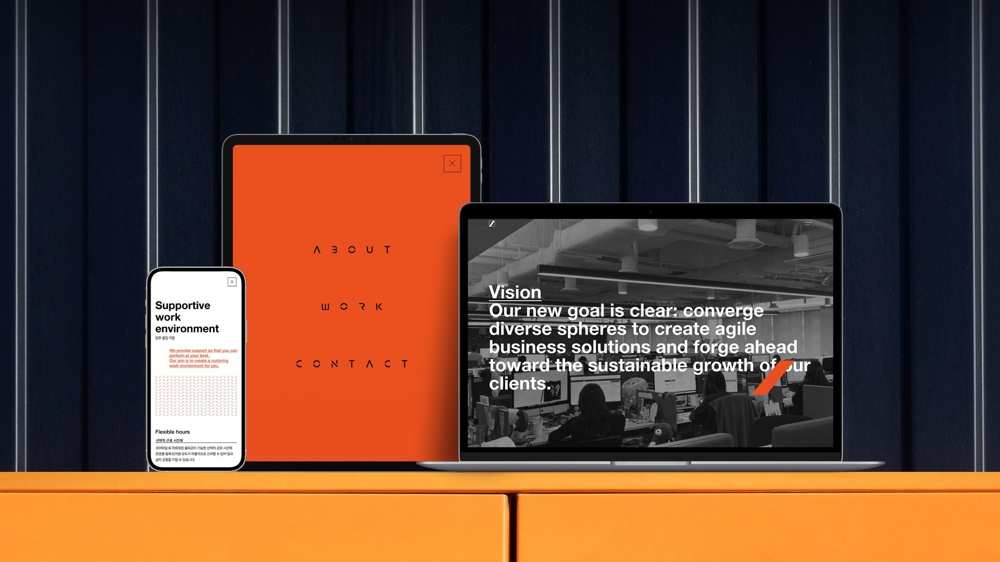
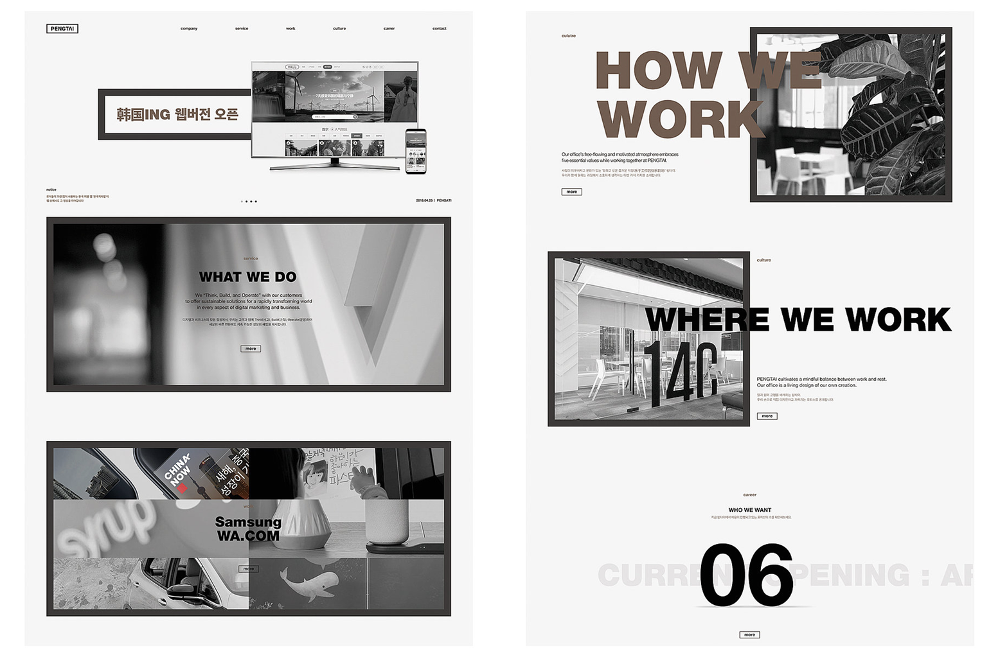
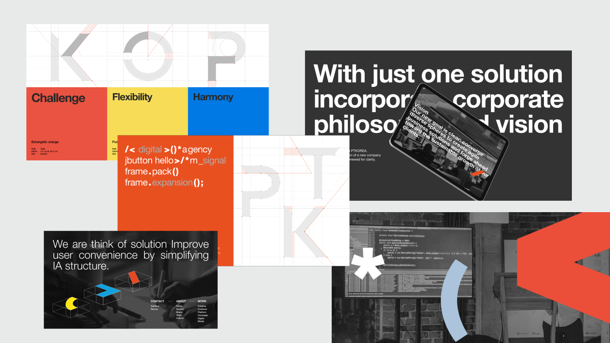
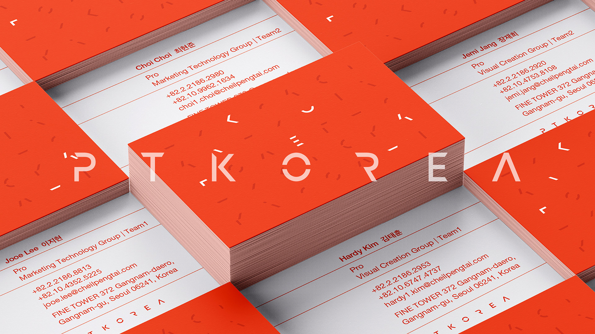
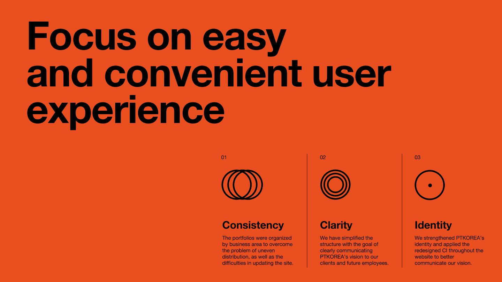
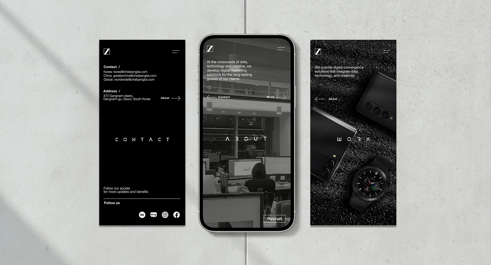
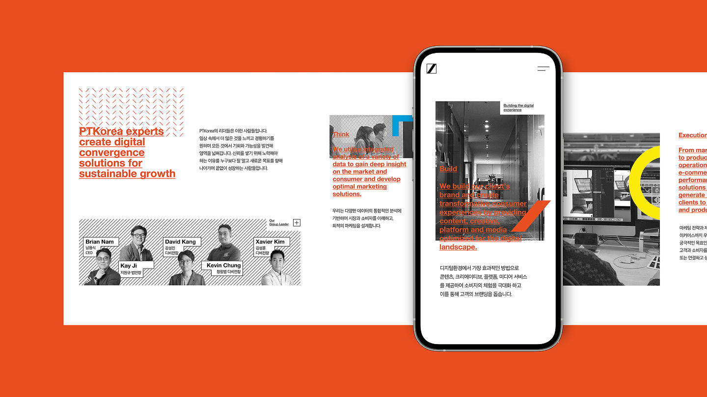
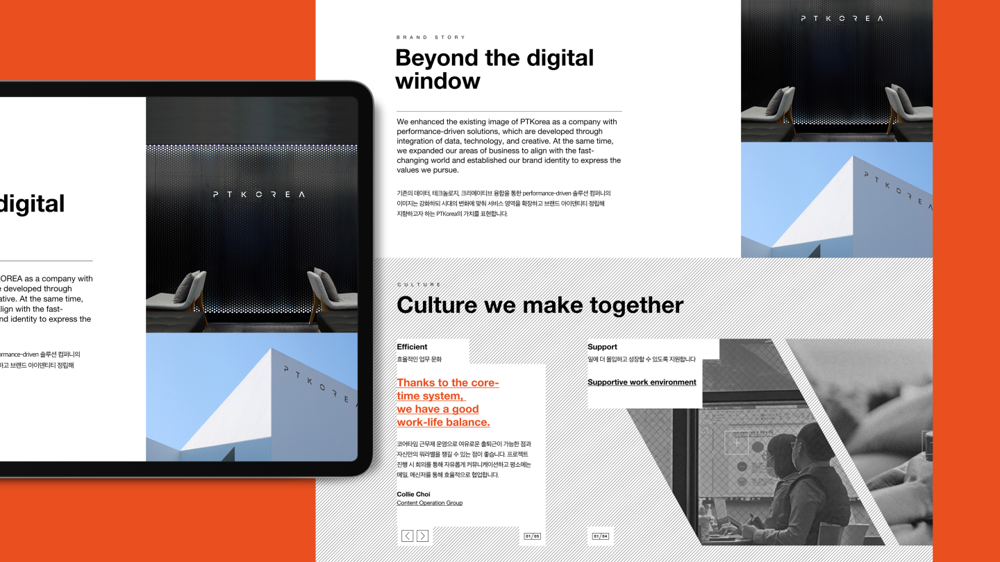

How a 117-person survey, a 3-pillar creative framework, and a low-code CMS cut internal update time by 60% and won a Red Dot Design Award.

After the rebrand, PTKorea had a new name and a new visual identity. But the website was still running on the old system: seven departments managing content independently, seven disconnected sections, and no one owning the brand end-to-end.
Three completely different user journeys were broken at the same time.
Clients couldn't find relevant work or figure out which team to contact.
Job applicants couldn't understand team structure or imagine working there.
Internal employees spent too long on every update because there was no consistent system.
This wasn't a redesign problem. It was a multi-audience UX problem wearing a brand problem's clothes.

Before — Old Website 기존 웹사이트 스크린샷I started with user research: a 117-person internal survey and a website visitor analysis to map who was actually using the site and what was failing them.
Three distinct audiences. Three completely different needs.
Clients came to evaluate a potential partner. They needed portfolio clarity and a direct path to the right team.
Job applicants came to assess company culture. They needed vision, team structure, and a reason to apply.
Competitors came to benchmark. A fragmented, outdated site was a credibility problem.
The internal survey (n=117) confirmed what the visitor analysis surfaced. Every job applicant surveyed (100%) had visited the website during their application process — a non-optional touchpoint, yet full of friction. The top pain points: 82.8% cited insufficient role and team information, 72.4% flagged slow content updates as their primary barrier.
The survey also asked which sections were most useful. Work ranked first at 62.1% — a finding that would directly shape the new structure.
| Target | Purpose of Visit | Core Need |
|---|---|---|
| Client | Project requests, competitive analysis | Portfolio access and direct team contact |
| Competitor | Benchmarking, research | Understanding business through portfolio |
| Job Applicant | Company information | Team structure, culture, and open roles |
The root cause was structural. Seven departments owned content independently, which made brand consistency impossible without a dedicated designer on every update. Fixing the visual layer without fixing the system would guarantee failure within six months.
I approached the solution the same way I would approach a design system project. If I could consolidate the architecture into three clear pillars and build a visual system that non-designers could execute from, brand consistency would become the default, not the exception.
The obvious alternative was a department-led structure — mirroring the old model. It failed the same test: the AS-IS user journey showed applicants leaving the site mid-session to search for team information on external blogs. Organizing by department would have reproduced that gap, because it maps content to internal teams, not to what each audience came to find.
The bet: a creative framework that is hard to use will not be used.
I used the survey data and competitor research as the creative brief. Data-driven persuasion was the only way to get seven departments to agree on a single direction. Opinion alone would not have worked.
The visual system was built like a component library: keyword hierarchy, color tokens, and BI application rules that any team member could follow without a designer in the room. The low-code CMS gave each department ownership of their section while keeping the brand guardrails in place.

Brand Guidelines · Design System 브랜드 가이드라인 · 컴포넌트 시스템The Red Dot Design Award (Web Design category) confirmed that the new identity held up against global design standards. At the first physical touchpoint — the business card — the brand received consistent, unsolicited praise from clients and employees alike.


Brand Identity — Business Card · Logo · Color System 브랜드 아이덴티티 결과물The bet held. Teams that previously needed a designer for every update were now managing content independently within brand guardrails — internal update time dropped by 60%.



Website — After 리뉴얼된 웹사이트 스크린샷A brand is a product that runs on people. If the people maintaining it cannot execute consistently, the strategy fails regardless of how good it looks.
The same logic that makes a good design system makes a good brand system: reduce friction for the people executing it, and consistency becomes the default.
A content performance dashboard for internal teams so maintainers can see which editorial templates drive the most engagement. That feedback loop would turn the brand system from a static set of rules into something that improves itself over time.